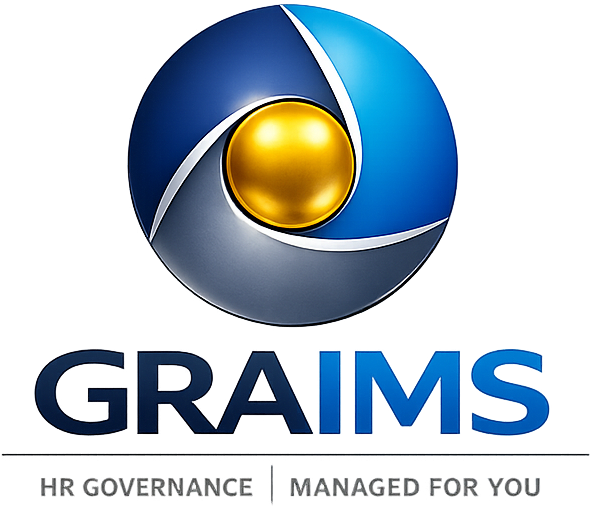

Ihr Präsentationstitel steht hier
Optionaler Untertitel — ergänzende Information zum Thema dieser Präsentation
Agenda
Was Sie heute erwartet
-
01
Ausgangslage & HerausforderungWarum KI-Governance jetzt entscheidend ist
-
02
EU AI Act — BetreiberpflichtenFristen, Hochrisiko-KI, Annex III
-
03
GRAIMS-Methodik im ÜberblickDFY, DWY, DIY — flexibel und skalierbar
-
04
Nächste SchritteQuick-Win in 4 Wochen
Rechtslage
Bewerber-KI ist Hochrisiko —
Ihre Pflicht als Betreiber
Der EU AI Act klassifiziert KI-Systeme zur Bewerberauswahl nach Annex III als Hochrisiko-System. Das bedeutet: Risikoklassifizierung, Betreiberdokumentation und nachweisliche Art.-4-Schulungen — unabhängig davon, wer das System entwickelt hat.
Die vollständigen Betreiberpflichten gelten ab 2. August 2026. Wer jetzt beginnt, gewinnt entscheidenden Vorlauf.
Compliance-Paket
Was Audit-Readiness konkret bedeutet
- 01 Risikoklassifizierung nach Annex III Schriftliche Einstufung als Hochrisiko-KI
- 02 Betreiber-Dokumentationspaket Technische Dokumentation, Konformitätserklärung, Verwendungsprotokoll
- 03 BR- & Datenschutzkonzept Mitbestimmungsrechtlich und DSGVO-konform
- 04 Art.-4-Schulungsnachweise Nachweisliche KI-Kompetenz aller relevanten Mitarbeitenden
- 05 Audit-Readiness-Check Strukturierte Prüfung vor dem 2. August 2026
Unser Ansatz
Governance & Compliance —
done for you
Wir übernehmen die vollständige KI-Compliance für Ihren Recruiting-Prozess — von der Risikoklassifizierung bis zur laufenden Dokumentation.
Unser Team aus KI-Governance, Arbeitsrecht und Datenschutz arbeitet in einer abgestimmten Methodik, die Sie nicht selbst entwickeln müssen.
Academy
Art.-4-Schulungen —
rechtssicher dokumentiert
Nachweisliche KI-Kompetenz ist Pflicht (Art. 4 EU AI Act). Unsere Programme vermitteln Führungskräften und Mitarbeitenden das notwendige Wissen — und erzeugen dabei alle geforderten Schulungsnachweise.
Zertifikat, Lernprotokoll und Teilnehmerliste — vollständig audit-ready aufbereitet.
KI-Governance ist kein IT-Thema.
Es ist eine Führungsaufgabe — mit rechtlicher Haftung und menschlicher Verantwortung.
Isabell MaderGründerin GRAIMS · KI-Governance & Methodik